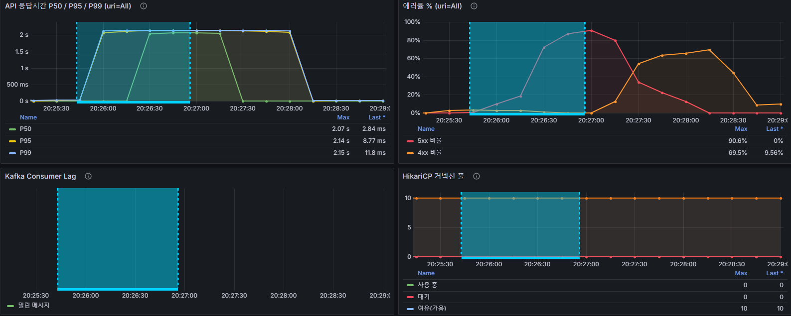
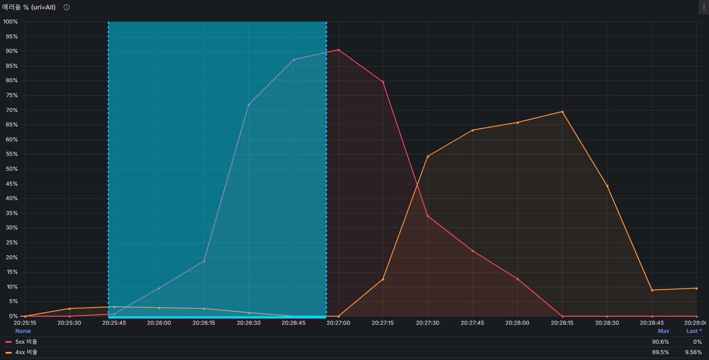
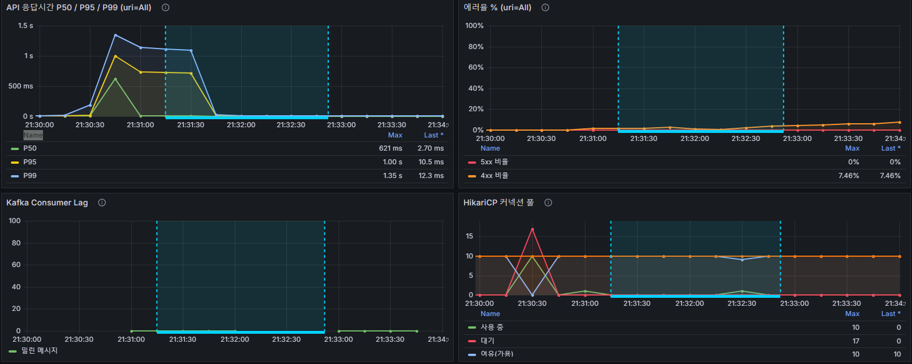
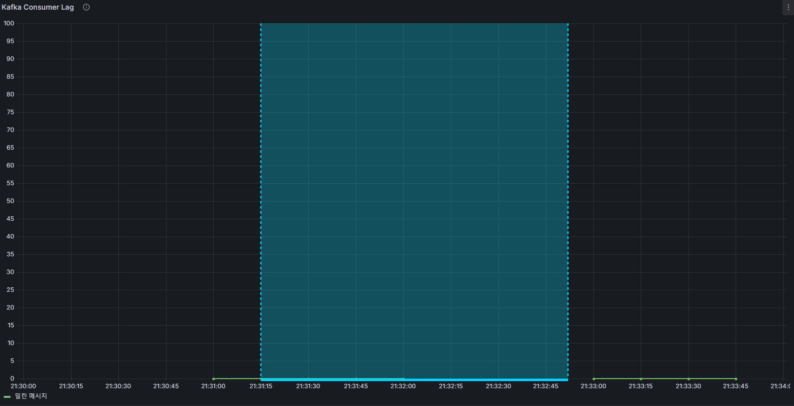
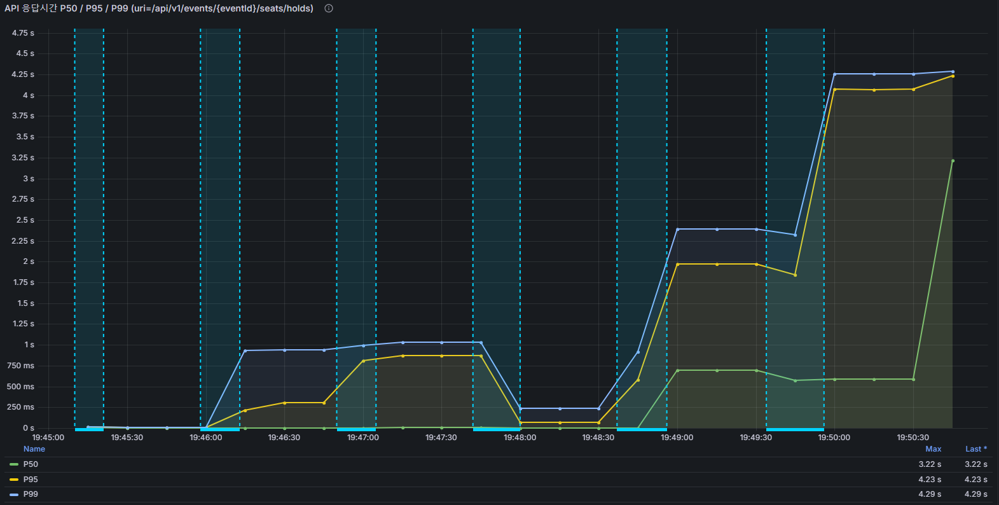
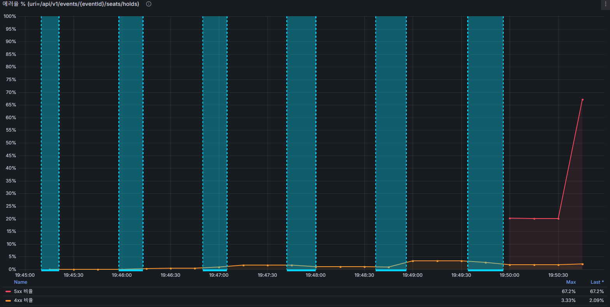

대상 시스템: TicketRush — 실시간 콘서트 좌석 예매 시스템
측정 목적: 오픈 폭주 트래픽에서 오버셀 없이, Redis/Kafka 장애가 나도 데이터 정합성이 깨지지 않는지 실측 검증
| 항목 | 값 |
|---|---|
| 인프라 | AWS EC2 m6i.xlarge(앱+Redis+Kafka+Kafka Connect+Nginx) + RDS db.m6i.large(MySQL) |
| 부하 도구 | Gatling(GoldenPathSimulation) — 대기열 진입→좌석 조회→홀드→결제 요청 전체 여정 |
| 장애 주입 | docker stop / docker start로 Redis·Kafka 컨테이너 직접 중단(Pumba는 환경 불안정으로 미사용) |
| 관찰 | Prometheus + Grafana(API 응답시간 P50/P95/P99, 에러율, Kafka Consumer Lag, HikariCP 커넥션 풀) |
| 시나리오 | 조건 | 결과 |
|---|---|---|
| 동시 300명 부하 테스트 | 15,000석 이벤트, 좌석 홀드 완전 동시 300명 | P95 883ms(목표 2,000ms 이내), 오버셀 0건 |
| 분산락 벤치마크 | 좌석 4개·300명 완전 동시, Redisson vs DB 비관적 락 | 처리량·응답시간 동등, DB 락은 HikariCP 대기 147건(Redisson 0) → Redisson 채택 |
| 카오스 A-1 (Redis 다운) | 좌석 400석·390명 부하 중 Redis 73초 완전 중단 | 오버셀 0건, 좌석 상태 재구성 완료 18초(목표 30초 이내) |
| 카오스 A-2 (Kafka 다운) | 동일 부하 중 Kafka 97초 완전 중단 | 결제요청·웹훅 5xx 0건, 이벤트 유실 0건, 사용자 경로 무영향 |
| 한계 테스트 | 15,000석 이벤트, N=100→500 완전 동시 투입 | N=500에서 절벽(성공률 76.4%) — 원인은 Redis 자원 경합(명령 타임아웃) |
그룹 좌석 홀드(2매 동시 선택) 직렬화 방식을 가정이 아니라 실측으로 선택하기 위해 두 방식을 직접 구현해 동일 조건(좌석 4개, 300명 완전 동시)으로 비교했다. 실패 방식(타임아웃 처리)까지 맞춰 공정하게 비교했다.
| 지표 | Redisson RLock | DB 비관적 락 |
|---|---|---|
| 오버셀 | 0 | 0 |
| 처리량 | 238 req/s | 238 req/s |
| Global P99 | 1,032ms | 1,018ms |
| 락 획득 타임아웃 | 0건 | 0건 |
| HikariCP 대기(pending) 피크 | 0 | 147 (풀 10개 만석) |
성능은 사실상 동등했다 — 홀드 액션이 HSETNX 한 번으로 매우 짧아 락 점유 시간이 짧기 때문. 유일한 실질 차이는 DB 락이 REQUIRES_NEW 트랜잭션마다 HikariCP 커넥션을 물어 300 동시 요청에서 대기가 147건까지 쌓인 것(Redisson은 0). "지금 느려서"가 아니라 "확장 시 커넥션 고갈로 먼저 무너지는 실패 모드가 있어서" Redisson을 채택했다.
좌석 400석 이벤트에 390명(버스트+트리클+복구 관찰용 꼬리 부하)을 태운 상태로 Redis를 73초간 완전히 내렸다 올렸다.
| 항목 | 결과 |
|---|---|
| 장애 시간 | 73초 |
| 좌석 상태 재구성 완료 | 18초 (목표 30초 이내) |
| 정상 응답 완전 복귀 | 24초 |
| 오버셀 | 0건 |
| 최대 응답시간 | 2,028ms (Redis 타임아웃 2초 cap 확인) |
| 실패(KO) 원인 | 62.6%가 대기열 유실(재진입 필요, 알려진 한계) · 나머지 장애 구간 타임아웃 · 진짜 서버 버그성 실패 0건 |


Redis가 재시작으로 데이터를 통째로 잃어도, DB 기준으로 좌석 상태를 자동 재구성하는 로직이 동작해 오버셀 없이 복구됨을 확인했다.
동일 규모 부하 중 Kafka 브로커를 97초간 완전히 내렸다 올렸다. 결제 실패 웹훅을 동시에 흘려보내 outbox→Kafka 경로를 실제로 태웠다.
| 항목 | 결과 |
|---|---|
| 장애 시간 | 97초 |
| 장애 중 결제요청·웹훅 5xx | 0건 (2,233 + 207건 전부 성공) |
| 이벤트 유실 | 0건 (outbox 207건 = 좌석 반납 207건) |
| Consumer Lag 0 도달 | 복구 직후 자동 (목표 60초 이내) |
| 오버셀 | 0건 |
| 장애 중 최대 응답시간 | 160ms — 평상시와 동일, 무영향 |


결제 확정/실패 처리가 DB 트랜잭션 + outbox 기록으로 완결되고 Kafka는 그 이후 비동기 전파만 담당(Outbox 패턴)하기 때문에, Kafka가 완전히 죽어도 사용자 경로는 그래프로 장애 시점을 구분할 수 없을 정도로 무영향이었다.
15,000석 단일 이벤트를 재사용하며 N=100→250→300→350→450→500 완전 동시 투입으로 절벽 지점을 확인했다(AWS EC2 m6i.xlarge + RDS db.m6i.large). 여기서 측정하는 건 좌석 홀드→결제 요청 구간(목표 <2,000ms)이며, 대기열 폴링 대기 체감은 별도(이탈률 테스트)에서 측정한다.
| N | 좌석 홀드 성공/전체 | P95 | P99 |
|---|---|---|---|
| 100 | 100/100 | 16ms | 17ms |
| 250 | 250/250 | 304ms | 940ms |
| 300 | 300/300 | 883ms | 1,032ms |
| 350 | 350/350 | 136ms | 260ms |
| 450 | 450/450 | 1,969ms | 2,392ms |
| 500 | 382/500 (23.6% 실패) | 4,080ms | 4,260ms |


원인 진단(앱 로그): N=500 구간 실패의 원인은 전부 RedisCommandTimeoutException(2초 타임아웃). AWS EC2 한 대에서 app·Kafka·Redis가 CPU를 나눠 쓰는 구조라, 부하가 몰리면 Redis 명령 처리가 지연되며 실패로 전환됐다 — "vCPU를 2배로 늘리면 한계도 오를 것"이라는 사전 기대와 달리, 실제 병목은 CPU 총량이 아니라 Redis 자원 경합이었다. 오버셀은 전 구간 0건.
참고(N=300→350 반전): 좌석홀드만 보면 350이 300보다 빠른데, 350에서 시스템이 더 여유로워진 게 아니다 — 같은 순간 전체 API 기준(uri=All)으로는 오히려 350 구간이 테스트 전체에서 가장 나빴다(P99 5.8s). 그 부담을 대기열 폴링(전체 요청의 62%)이 흡수했고 좌석홀드는 그 틈에 빠르게 처리됐을 뿐이다. 라운드당 표본이 작아 100~450 구간의 오르내림은 노이즈로 보는 게 맞고, 진짜 신호는 500에서의 절벽뿐이다.
측정 한계: 한계 테스트의 정확한 절벽 위치(N=500)는 AWS 인스턴스 배정에 따라 달라질 수 있음을 확인했다(동일 조건 재검증에서 이전 측정과 차이 발생) — 병목의 정체(Redis 자원 경합)는 재현됐으나 절대 임계값은 인스턴스별 변동성이 있다.
다음 단계: Redis를 별도 인스턴스(ElastiCache 또는 전용 EC2)로 분리해 자원 경쟁 자체를 제거, 대기열 폴링을 push 방식(WebSocket)으로 전환해 Redis 요청량 절감.